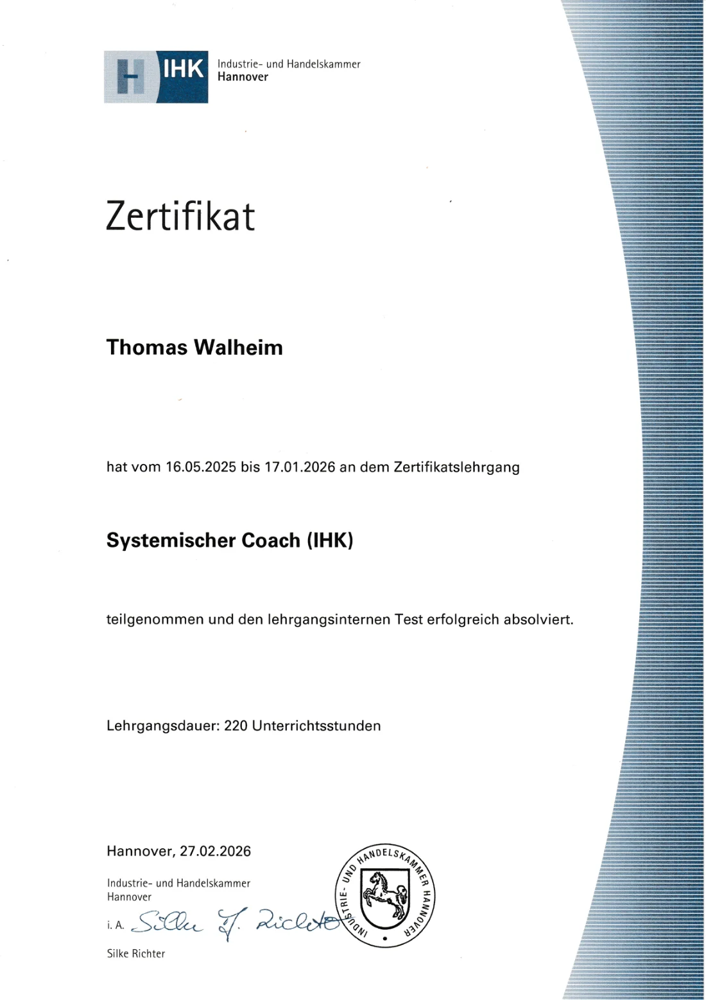
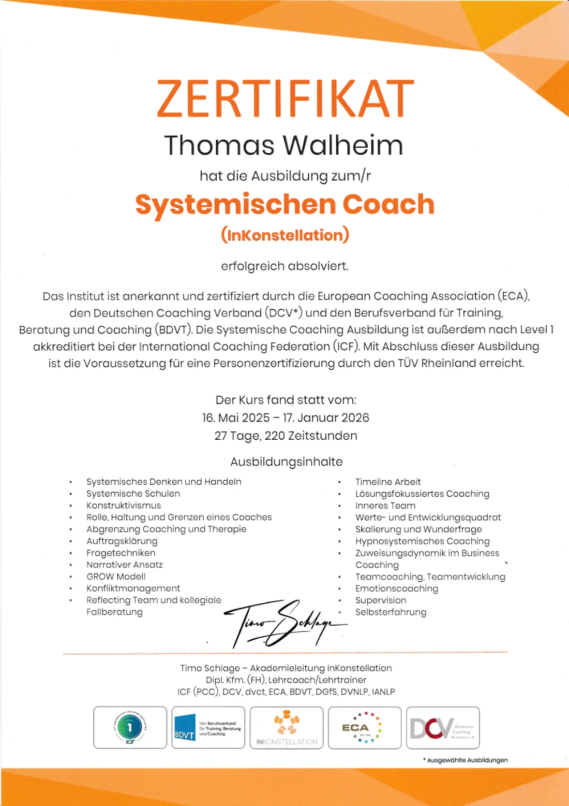
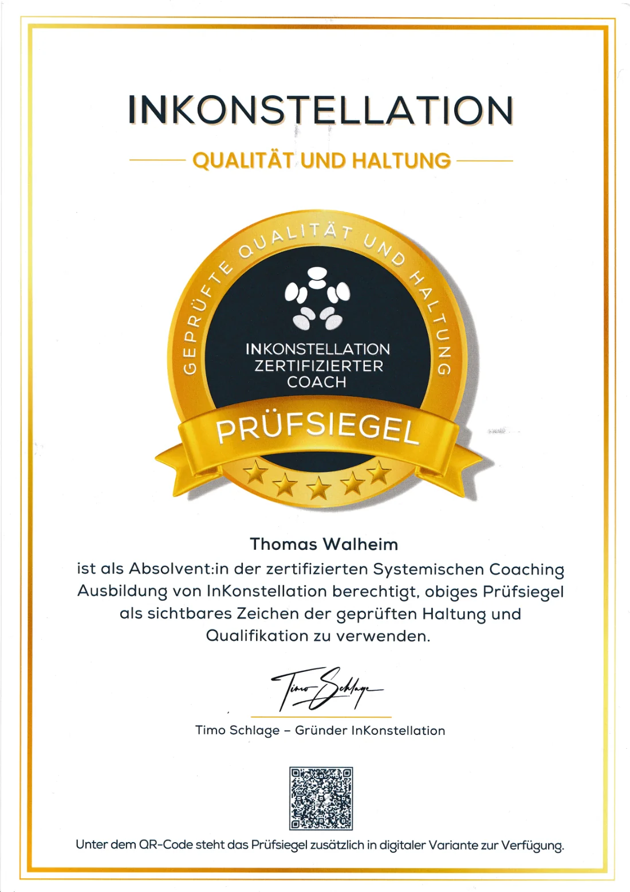

Über mich
Hallo, ich bin Thomas.
Ich bin zweifacher Vater, Unternehmer und ausgebildeter systemischer Coach mit IHK-Zertifikat und geprüftem Qualitätssiegel.
Auf meinem eigenen Weg habe ich erlebt, wie wertvoll es ist, jemanden an der Seite zu haben, der zuhört, ehrlich nachfragt und an einen glaubt.
Ich habe mich oft gefragt, was machen die, die nicht so jemanden haben?
Deshalb begleite ich heute Menschen dabei, sich selbst und andere besser zu verstehen und eigene Lösungen zu entwickeln.
Als Coach vertraue ich darauf, dass die Antworten bereits im Menschen selbst liegen.
Mit meinen Vater-Vorbereitungskursen möchte ich Männern das Wissen und die Orientierung mitgeben, die mir selbst auf dem Weg zum Vater geholfen hätten, und zwar klar, praxisnah und auf Augenhöhe.
Mein Ziel ist, dass du gut vorbereitet in diese neue Rolle startest und deinen eigenen Weg als Vater findest.
Qualifikationen und Zertifikate
Geprüft und ausgebildet






Anmeldung & Kennenlernen
Lass uns ins Gespräch kommen.
Melde dich für den Vater-Vorbereitungskurs an oder frag ein unverbindliches Kennenlernen an.